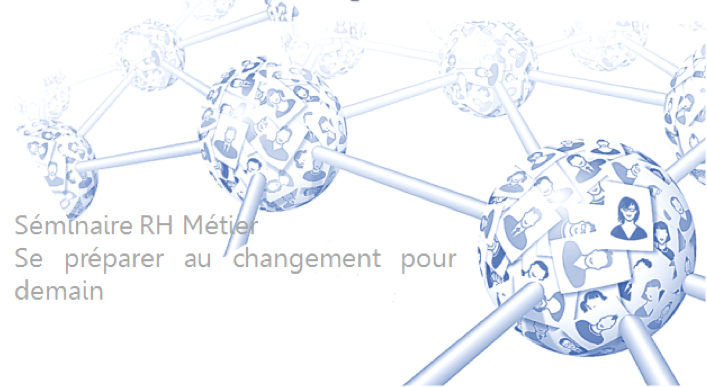
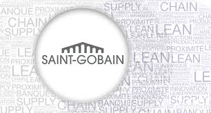
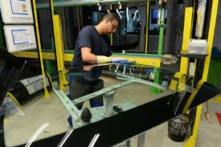
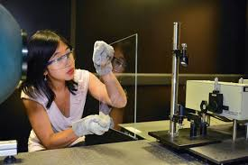

SAINT-GOBAIN
Le Club RH
Le club RH se réuni chaque année lors d’un séminaire afin de partager les expériences de chacun. Durant ces deux jours des décision pour l’avenir de chaque branche sera prise pour amélioré les performance de l’entreprise. Cette année, la Picardie à l’honneur avec les structures de Noyon, et Thourotte lumière.
Le club RH se réuni et vous fait partager son expérience en images!

- 
- 
- 
- 
Chez Saint-Gobain, chaque recrutement s’inscrit toujours dans une perspective à long terme. Et bien qu’il soit organisé localement, c’est à l’avenir du Groupe qu’il vous engage à participer. Avec son processus de recrutement, le Groupe Saint-Gobain s’assure de disposer des talents nécessaires à son développement. Il vous permet également de valider vos motivations et vos aptitudes à satisfaire cette ambition.
Une décision collective, un engagement réciproque
La stratégie de Saint-Gobain autour de l’habitat durable positionne le Groupe comme une entreprise pleinement inscrite dans son temps et consciente des enjeux auxquels les sociétés font face. Saint-Gobain s’appuie sur des valeurs et des convictions fortes et démontre chaque jour que croissance de ses activités et innovation riment avec éthique et développement durable.
Chez Saint-Gobain, chaque recrutement s’inscrit toujours dans une perspective à long terme. Et bien qu’il soit organisé localement, c’est à l’avenir du Groupe qu’il vous engage à participer. Avec son processus de recrutement, le Groupe Saint-Gobain s’assure de disposer des talents nécessaires à son développement. Il vous permet également de valider vos motivations et vos aptitudes à satisfaire cette ambition.